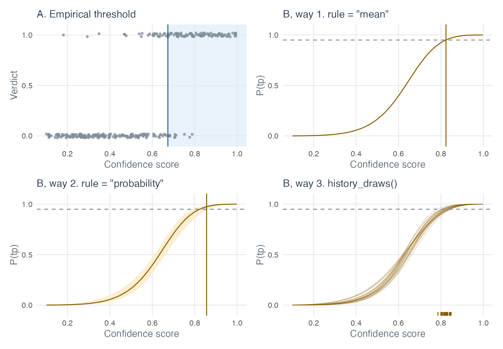

Choosing a route: from reviewed clips to histories and occupancy
Source:vignettes/articles/choosing-a-route.Rmd
choosing-a-route.RmdOnce the clips are reviewed, every analysis has to decide which
detections count. sheepdog offers four routes to that decision, and one
more step for occupancy models with false positives. They start from the
same reviewed clips but differ in what they guarantee, in what they need
and in what they do with uncertainty. This article puts them side by
side; the details of each are in vignette("calibration"),
vignette("bayesian-calibration"),
vignette("community-matrices") and
vignette("crywolf-integration").
In every route a night counts as detected when at least k of its detections count (k = 1, 2 or 3).
Start here
| if you want… | take | needs |
|---|---|---|
| matrices quickly, without a model | A · empirical threshold | a random_detections review |
| the standard input to Stage 3 | B · way 1 · probability cut | a calibration (lme4 or brms) that passed its checks |
| caution where review was thin | B · way 2 · probability cut with certainty | a brms calibration |
| calibration uncertainty in the results | B · way 3 · one history per draw | a brms calibration |
| occupancy with false positives | the threshold route or the draws route (below) | a random validation design |
Four routes to a detection history

p_min; way 2 moves the cut to the right where
the curve is uncertain; way 3 has one cut per posterior draw, shown as
ticks.| route | what it guarantees | a detection counts when | uncertainty | best for |
|---|---|---|---|---|
| A | the set of kept detections reaches the target precision | score ≥ the threshold of the cell | none: one threshold per cell | quick results, avoiding model assumptions |
| B · way 1 | each kept detection has P(tp) ≥ p_min, if the curve is
right |
P(tp) ≥ p_min
|
ignored: the curve is treated as exact | the standard route to Stage 3 |
| B · way 2 | as way 1, in at least prob_min of the plausible
curves |
pr_reliable ≥ prob_min
|
used in the cut, not carried into the results | cells that differ a lot in review effort |
| B · way 3 | the way 1 cut, in each posterior draw | P(tp) ≥ p_min under the curve of the draw |
propagated: a mean and an interval per cell | results where calibration uncertainty matters |
A · empirical threshold.
review_support() runs suggest_thresholds() on
the reviewed clips of each site x species cell and returns the lowest
score at which the clips above it reach the target precision (0.90),
weighted by the sampling design, with its diagnosis (see the diagram on
the reference index). There is no
model: the threshold is read off the clips, and
threshold_history() turns the thresholds into a nightly
history. The guarantee is for the set of detections
kept, not for each one.
B · way 1 · probability cut. The Stage 2 calibration
gives every detection a probability of being true, P(tp); a detection
counts when P(tp) ≥ p_min (0.95). This is
detection_history(rule = "mean") and what
calibrate() writes. The guarantee is per detection, and
cells with few reviewed clips borrow strength from the others, but the
curve is treated as exact.
B · way 2 · probability cut with certainty. With a
brms calibration, each detection has a posterior for P(tp).
pr_reliable is the posterior probability that P(tp) ≥
p_min, and a detection counts when pr_reliable
≥ prob_min (0.9):
detection_history(rule = "probability"). The cut is
stricter where the curve is uncertain, typically in cells with few
reviewed clips, but the result is still one history.
B · way 3 · one history per draw.
history_draws() applies the way 1 rule in each posterior
draw of the curve and returns one history per draw. Detections near the
cut are kept in some draws and not in others, and
community_matrices_draws() turns that into a mean and an
interval for each cell of the matrices.
Points of caution
A
- The 90% holds for the set of detections kept: those just above the cut can be mostly false.
- The threshold is the first cut that passes; precision can dip again
above it.
suggest_thresholds(sustained = TRUE)requires the target at every higher cut with at leastmin_nclips, but high cuts rest on few clips, so it leaves more cells without a threshold. It is off by default, and it works as a sensitivity check in cells with many clips. - Only cells whose diagnosis is “reached” get a threshold. The other
cells are
NAinthreshold_history()and show as 0 in the matrices, which does not mean that the species is absent. - The precision is weighted by
inclusion_prob, which must be right, cumulatively over review rounds: read them withcombine_rounds(). - Reviewing a cell until it reaches the target makes its precision
look higher than it is.
review_support()marks those cells inreached_last_round(vignette("validation-effort")). - One cut per cell assumes that precision is stable across the months
and sites inside it (unless
byis used).
B · way 1
- It depends on the model being right: use only species marked “ok” by
calibration_quality(). - The reviewed clips must be a random draw of the detections
(
random_detections). - Partial pooling can lend a weak cell the curve of the others, and outside the reviewed scores the curve is extrapolated.
- A site effect in the curve mixes local calling rate into P(tp).
- The classifier must be the same version as the one that produced the reviewed clips.
B · way 2
- All the cautions of way 1.
- The priors matter where review was thin
(
calibration_sensitivity()). -
prob_minis a second choice to justify. - Dropping detections near the cut means more false negatives.
B · way 3
- All the cautions of way 1: a wrong model gives confident wrong draws.
- The intervals cover calibration uncertainty only, not the sampling of nights.
- Every analysis has to be repeated over draws and pooled.
Checking one route against the other
A and B can be compared on the same cells.
compare_thresholds() puts them side by side for each site x
species. Its flag compares the empirical threshold with the
model threshold of rule = "precision", which asks the
question of A (the precision of the detections kept) from the model, so
the two should agree when the model reproduces what the reviewed clips
show:
comparison <- compare_thresholds(val_clips, res$fit, scored = res$scored,
target_precision = 0.90,
quality = res$quality)
count(comparison, flag)post_validation(fit = , scored = ) writes the same table
to thresholds_compared.csv. If the thresholds agree, report
the model-based route. Where they differ, look at the cell: a model
threshold far below the empirical one can mean that pooling lends the
cell a curve; an empirical threshold far below can mean that the first
passing cut was lucky.
Note that B with rule = "probability" and a target of
0.95 asks a stricter question (each detection, not the set), so its
thresholds are usually higher than those of A at 0.90.
Occupancy with false positives
Occupancy models with false positives, such as those of crywolf, estimate the false-positive rate themselves from a subset of known truth. Any route can feed them:
-
Threshold route (A, or B with lme4 or brms): the
score threshold becomes the detection rule. Export with
export_occupancy_data()withoutfit; in crywolf,fp_aggregate(threshold = )builds the occasions and one model is fitted.fp_aggregate()takes one threshold, whereas A gives one per site x species, so a single value has to be chosen for the analysis, and the validation drawn at that same value. -
Draws route (B with brms only):
export_occupancy_data(fit = )writes the calibration draws, andoccasion_draws()(orcrywolf::fp_draws_data()) builds one detection matrix per draw. The model is fitted to each and the posteriors pooled (crywolf::fp_occu_mc()), so the uncertainty of the calibration reaches occupancy.
Both need known truth drawn at random
(vignette("sampling-designs")):
-
random_detectionsat the same threshold as the occupancy analysis (the observation-confirmation design), which anchors the false-positive rate; and/or -
random_recordings(the multiple-methods design), which anchors the state of sites and shows what the classifier misses.
Use a calibration without a site effect for occupancy: P(tp | score, site) partly reflects how often the species calls at the site, which is what occupancy estimates, so it would be counted twice.
Code per route
The objects below follow vignette("calibration"):
val_files are the validation_by_clip.csv
tables, tables the selection tables by site and
pred the predictions read with
read_selection_tables().
A · empirical threshold.
threshold_history() takes every prediction and the output
of review_support(), and returns a history with the columns
of detection_history(). Nights of cells without a threshold
stay in it, because the matrices take the effort from the nights of the
history:
val_clips <- read_validation_tables(val_files)
thr_A <- review_support(val_clips, pred, target_precision = 0.90)
history_A <- threshold_history(pred, thr_A)B · way 1.
res <- calibrate(validation_files = val_files, prediction_tables = tables,
output_dir = "calibration", p_min = 0.95)
history_1 <- res$history # also nightly_detection_history.csvB · ways 2 and 3 (brms; see
vignette("bayesian-calibration") for the prior and the
checks):
res_b <- calibrate(validation_files = val_files, prediction_tables = tables,
output_dir = "calibration_brms", engine = "brms",
prior = my_prior, p_min = 0.95) # calibration_prior(), checked first
history_2 <- detection_history(res_b$scored, p_min = 0.95,
rule = "probability", prob_min = 0.9)
history_3 <- history_draws(res_b$fit, res_b$scored, p_min = 0.95, n_draws = 200)Then, for the community matrices
(vignette("community-matrices")).
cell_status() needs a calibration, so in route A the choice
of core species is manual (core_A below):
status <- cell_status(res$fit, read_validations(val_files), p_min = 0.95)
core <- suggest_core_species(status) # species codes; the final choice is yours
mats <- community_matrices(history_1, core_species = core)
mats_3 <- community_matrices_draws(history_3, core_species = core)
mats_A <- community_matrices(history_A, core_species = core_A)Or, for occupancy
(vignette("crywolf-integration")):
# threshold route
export_occupancy_data("occupancy", detections = pred, validation = val_clips)
# draws route
export_occupancy_data("occupancy_draws", detections = pred,
validation = val_clips, fit = res_b$fit)
occasion_draws("occupancy_draws", rule = "sample")See also
- The reference index: the figures of each stage.
-
vignette("calibration"): thresholds from the calibration and the nightly history. -
vignette("bayesian-calibration"): the two rules for a reliable detection, and the propagation of uncertainty. -
vignette("community-matrices"): the entry rule, the core species and the analyses. -
vignette("sampling-designs")andvignette("crywolf-integration"): the validation designs and the occupancy export.